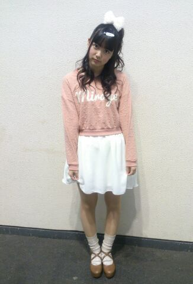
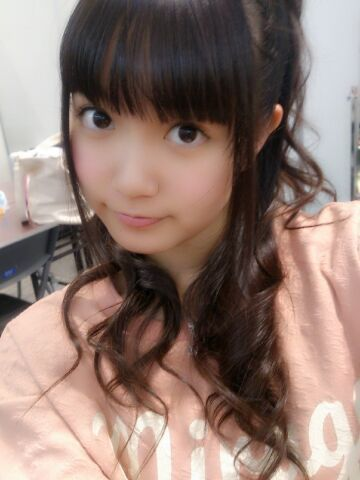

| 2014/04 07 Mon | ひめたん(*>ω<*)そ の430 |
京都2日間 ありがとうございました！
1日目 全国握手会
生まれたままで
初ライブパフォーマンス( ^O^ )
新制服も新鮮だったかな♪
握手は みおちゃん (堀未央奈ちゃん)とぺあ

巻きツインお揃っちー(＊´ω`＊)
こんなふうに やさしくて気が利いて
ほわほわしてるみおちゃん好きよー
そしてみおちゃんファンの方
優しくてフレンドリーで楽しかったです
仲良くしてくださってありがとうございました！
運営さんブログの
中元日芽香、伊藤寧々、永島聖羅と「誰か」
みなさん誰かわかりますかー？
結構難問かも( ´ ▽ ` )んふ
2日目 個別握手会
お洋服はこんな感じです
画質が恐ろしく粗いですひゃっはー

ヘアはひめたんりぼんに
4部 ハーフアップくるくる
5部 ポニーテール
写メは4部◎

わかるかな？
全握は前髪長かったのを
がんばってくるってしてたけど
個握の前に切ってもらいました！
そして2日間の握手会で思ったのが
ひめたんびーむ効かない人が
増えてきたきた(´・ω・｀)
「ひめたんびーむ！」
「でてないじゃん！」
「でーてーるー！」
ってゆーあの乃木どこの場面を
何回再現したことか。
あと、おにゃーのこ率が
高くてびっくり(゜ω゜)嬉しい悲鳴。
アイドルの握手会って
来るのに勇気がいるのかなーって
ひめたんは思うんだけど
そんな中会いに来てくれて
ほんとに嬉しいですありがとうねー
みんなかわいくてこっちまでほっこり＼＊／
もちろんぼーいずのみんなも
いつもありがとうね！
ぼーいずだけどひめたんの好みに合わせて
ぴんく着てみたり
蝶ネクタイしてみたりしてくれて
なんかもう愛されてるなひめたん(´；ω；｀)うう
初めましての方もたくさんいらっしゃって
嬉しい！これからよろしくね！
ひめたんその400の
名札をダウンロードして
よかったらお揃いで作ってみてね☆
と言いながら今日も
5部でつけるの忘れてた(´nωn`)ぺろ
そしてホテルのぺあは
ねねころ (伊藤寧々ちゃん)でした
ねねころ3日間ありがとうねー◎
昨日の夜は時間がいっぱいあったから
ふたりでめーちゃお話したー
楽しかったーよー
最後に
プリンシパルtroisの
キービジュアルが公開されました！
ひとりひとりの個性の汲み取って
デザインしていただきました
ひめたんのテーマは
「ひめたんりぼん」「ひめたんびーむ」よー
背景がぴんくなのもステキですね( ^O^ )きゃぴ

 ところでおくばひめー！
ところでおくばひめー！
今日仙台は雪が結構降ったんだけど
きゅんきゅん王国は大丈夫だったー？
ちょっとまってまってまって( `ω´ )
ねーおくばひめってやだ！
かわいくない！却下！
じゃあボクにもアダ名をつけさせてください。
「くそえくぼ」！！
どうでしょう？^ ^
うわああぁぁああぁあん。゜(゜´Д｀゜)゜。
ひめたんって一流のアイドルなのに、
何でそんなに親しみやすいのー？
一流のアイドルじゃないんじゃない？え
えくぼひめ は お風呂の時 どこから洗うの？
手？足？それとも... \(//∇//)\
あたまでーす\(//∇//)\
きゃー恥ずかしー！
なんだこれ(笑)
 ひめたんが「ブログ」じゃなく
ひめたんが「ブログ」じゃなく
「日記」と云うのは拘り？
日記の方がより密な感じがするからかな？
ひめたんにとっては
そっちの方が正確な表現のような気がして
何となく日記って呼んでます＊
写メのね、寝てるひめたんが
天使すぎて食べちゃいたいんだけど、
食べていーい ??
にゃー(「・ω・)「
ひめたん46は
今日はおやすみさせてください。
いつもたくさんのコメントありがとうございます
前回は特に多くてびっくりしちゃった！
みんなが質問に答えてくれた＼(^O^)／
たまには逆の立場に立ってみるのも
悪くないですなー
なんてゆーかみんなのレベルが高すぎて
ひめたん拾いきれるかわからんけど
ひとりで楽しみながら読みましたぞー
ひめたんのこと好きよって方が
たくさんいらっしゃって安心したよー♪
そうです、わかりきってて聞いたのよー
そのわりには「別にー」って方も
(結構)いらっしゃったけど
照れちゃって照れちゃって(＾ω＾)んふふ
好きな歌はねー
全部！って方もいらっしゃって
挙げてくださる曲も結構ばらばらで
乃木坂ちゃんは名曲が
いっぱいあるんだなあーって思った＊
ひめきゅんさんは思い出も含めて
バレッタとか海流の島よとか
涙がまだ悲しみだった頃とか多かったかなー♪
みんながせっかく教えてくれたから
統計とろうと思ってたんだけど
ちょっと3日じゃ厳しくて( >_< )ごめんね
とゆーことで
質問に答えてくださったみなさん
ありがとうございました♪
ひめたんの立場はいかがでしたー？
大変だった？楽しかったー？
えってか何だかひめたんも楽しいから
これからはちょこちょこみんなに
質問しようかしら。
(＊´・ω・＊)
コメント(567)
2014/04/07 21:06